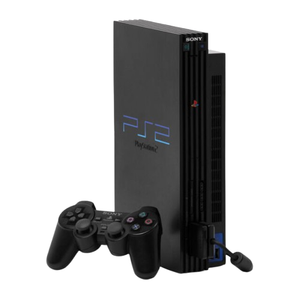
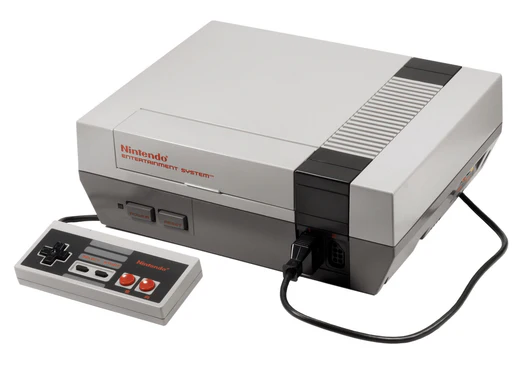
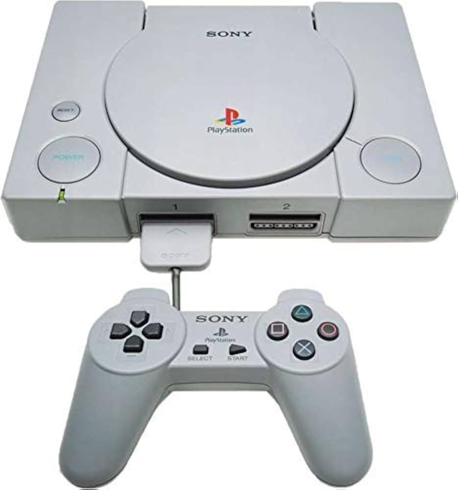
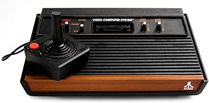
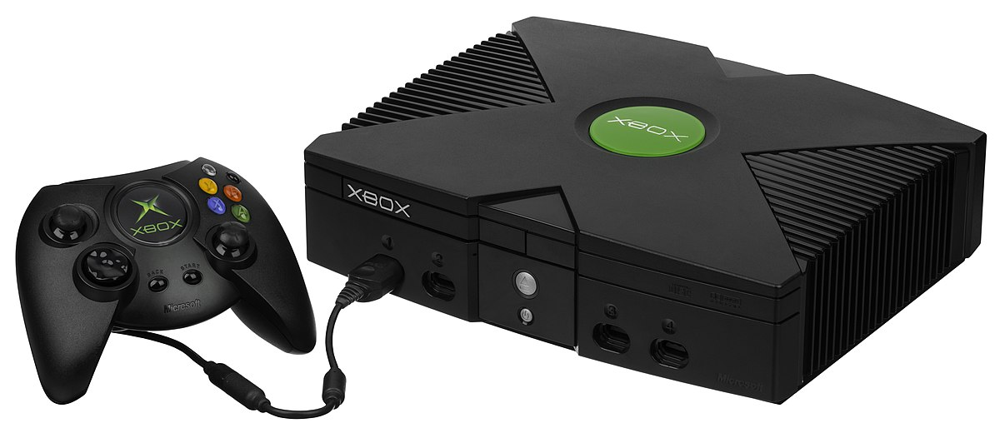
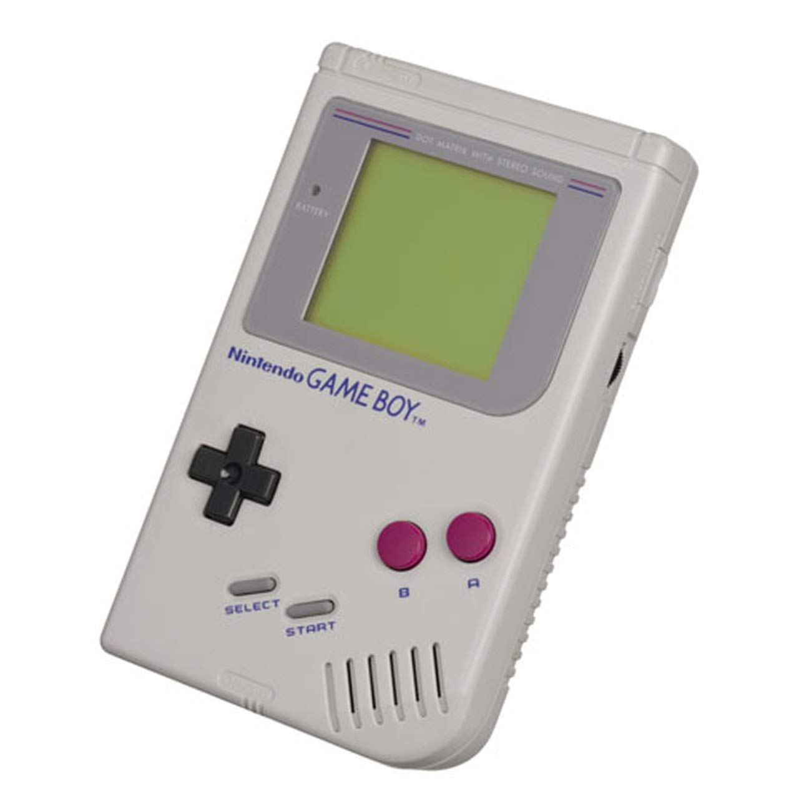
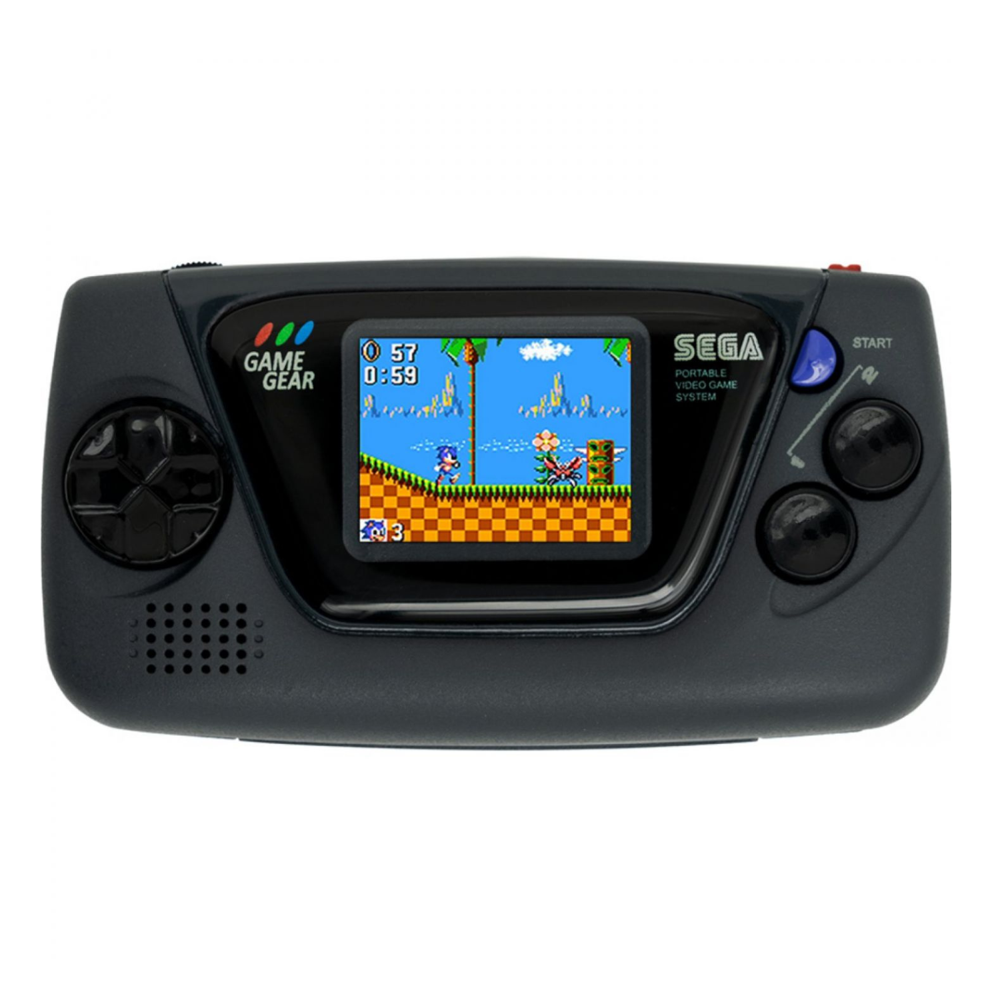
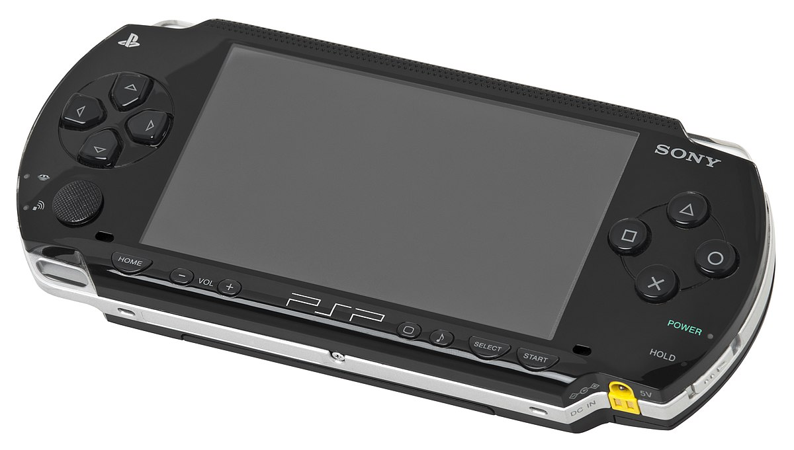

GameZone
Mundo Retro
El retro gaming es una tendencia que ha ganado popularidad en los últimos años, donde los jugadores buscan revivir la nostalgia de los videojuegos clásicos. Consolas como la Nintendo Entertainment System (NES), Sega Genesis y Atari 2600 han dejado una huella indeleble en la historia de los videojuegos. Los jugadores disfrutan de títulos icónicos como Super Mario Bros.

Reseñas de Juegos y Consolas

Nintendo system
La Super Nintendo Entertainment System (SNES) es una consola de videojuegos de 16 bits lanzada por Nintendo en 1990. Conocida por su amplia biblioteca de juegos icónicos, como Super Mario World y The Legend of Zelda: A Link to the Past, la SNES se convirtió en un símbolo de la era dorada de los videojuegos. Su diseño elegante y su control ergonómico la hicieron popular entre los jugadores de todas las edades. La SNES introdujo gráficos coloridos y efectos de sonido avanzados para su época, lo que permitió a los desarrolladores crear mundos vibrantes y envolventes. Además, la consola fue pionera en el uso de cartuchos con memoria adicional, lo que permitió juegos más grandes y complejos. A pesar de su lanzamiento hace más de tres décadas, la SNES sigue siendo un favorito entre los coleccionistas y los entusiastas de los videojuegos retro.
Leer másSony PlayStation
La PlayStation original, lanzada por Sony en 1994, marcó un hito en la historia de los videojuegos al ser la primera consola de videojuegos en utilizar CD-ROM como medio de almacenamiento. Con su potente hardware y gráficos en 3D, la PS1 revolucionó la forma en que se desarrollaban y jugaban los videojuegos. Títulos icónicos como Final Fantasy VII, Metal Gear Solid y Resident Evil definieron la era de los juegos de rol y acción. La consola también introdujo un control innovador con botones analógicos, lo que mejoró la experiencia de juego. A pesar de su diseño simple y su tamaño compacto, la PS1 dejó una huella indeleble en la industria del entretenimiento interactivo. Su legado perdura hasta hoy, y muchos consideran que sentó las bases para el éxito de las consolas modernas.
Leer más

Atari
Atari, fundada en 1972, es una de las compañías pioneras en la industria de los videojuegos. Su consola más emblemática, la Atari 2600, revolucionó el entretenimiento en casa al popularizar los videojuegos en cartucho. Con títulos icónicos como Pong y Space Invaders, Atari sentó las bases para el desarrollo de la industria de los videojuegos. La compañía también fue responsable de la creación de algunos de los primeros juegos multijugador y gráficos en 2D. A pesar de enfrentar desafíos en la década de 1980, Atari sigue siendo un nombre reconocido y querido por los entusiastas de los videojuegos retro. Su legado perdura a través de consolas modernas y una rica historia que ha influido en generaciones de jugadores.
Leer másXBOX
La Xbox, lanzada por Microsoft en 2001, marcó la entrada de la compañía en el mundo de los videojuegos. Con su potente hardware y conexión a Internet, la Xbox revolucionó la forma en que los jugadores interactuaban entre sí. Su servicio Xbox Live permitió el juego en línea y estableció un nuevo estándar para las consolas de videojuegos. La Xbox también introdujo títulos icónicos como Halo: Combat Evolved y Forza Motorsport, que se convirtieron en franquicias exitosas. Con su enfoque en la comunidad y la conectividad, la Xbox ha evolucionado a lo largo de los años, ofreciendo experiencias de juego innovadoras y una amplia biblioteca de juegos para todos los gustos.
Leer más
Consolas Portátiles

Nintendo Game Boy
La Game Boy es una videoconsola portátil de 8 bits de cuarta generación desarrollada y fabricada por Nintendo. Salió a la venta por primera vez en Japón el 21 de abril de 1989, en Norteamérica más tarde ese mismo año y en Europa a finales de 1990. Fue diseñada por el mismo equipo que desarrolló la serie Game & Watch de juegos electrónicos portátiles y varios juegos de Nintendo Entertainment System (NES): Satoru Okada, Gunpei Yokoi y Nintendo Research & Development
Leer másGame Gear Sega
La Sega Game Gear es una consola portátil de videojuegos lanzada por Sega en 1990. Aunque era más avanzada técnicamente que la Game Boy de Nintendo, la Game Gear tenía una duración de batería limitada, lo que la hacía menos práctica para largas sesiones de juego. A pesar de esto, ofrecía una experiencia de juego única con títulos exclusivos como Sonic the Hedgehog y Columns. La consola sigue siendo recordada como un ícono de los videojuegos portátiles de los años 90.
Leer más

PSP
La PlayStation Portable (PSP) es una consola portátil de videojuegos desarrollada por Sony y lanzada en 2004. Con su pantalla LCD de alta calidad y gráficos impresionantes para su época, la PSP ofrecía una experiencia de juego similar a la de las consolas de sobremesa. La consola contaba con una amplia biblioteca de juegos, incluyendo títulos populares como God of War: Chains of Olympus y Grand Theft Auto: Vice City Stories. Además de los videojuegos, la PSP también permitía la reproducción de música, videos y navegación por Internet, convirtiéndola en un dispositivo multimedia versátil. Aunque fue superada por otras consolas portátiles en términos de ventas, la PSP dejó un legado duradero y sentó las bases para futuras consolas portátiles de Sony.
Leer más